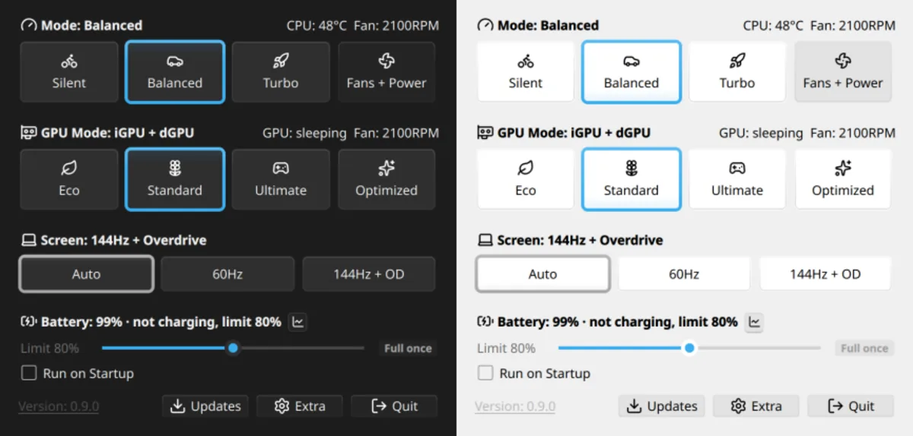

Open source / Linux
Shiftray
A tray app for ASUS laptops on Linux: power modes, fan curves, GPU switching, keyboard lighting, battery limits and the Fn keys in one small window. Released as an AppImage and as Fedora and Arch packages, translated into 7 languages.
- Python
- PySide6 / Qt
- asusctl
- Cardwire
- RPM / AUR
